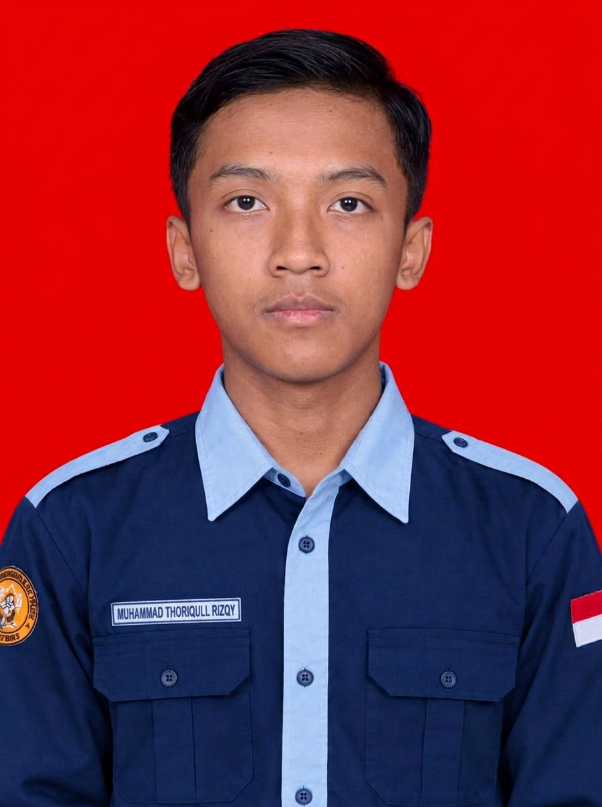
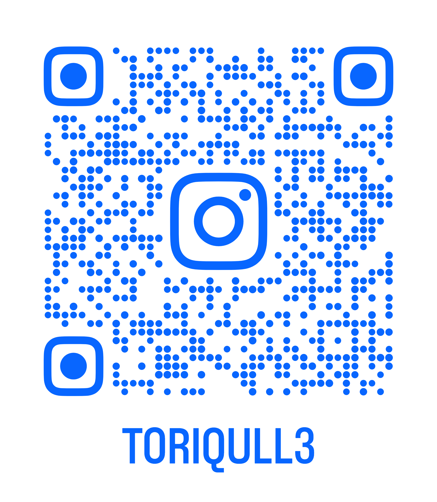
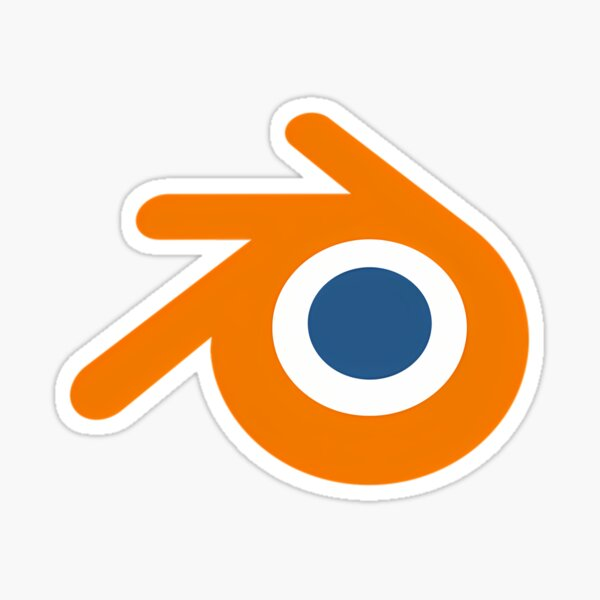
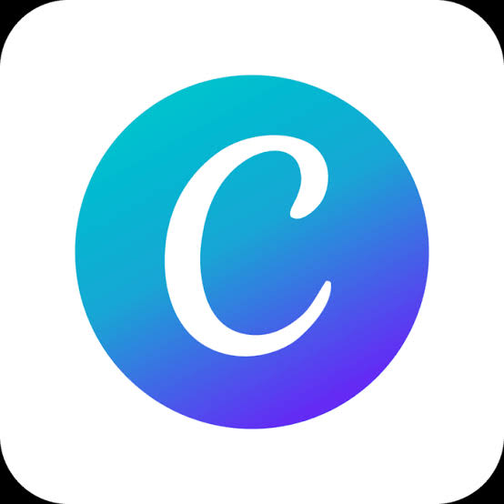
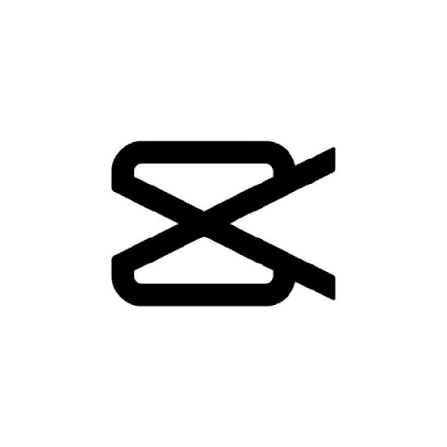
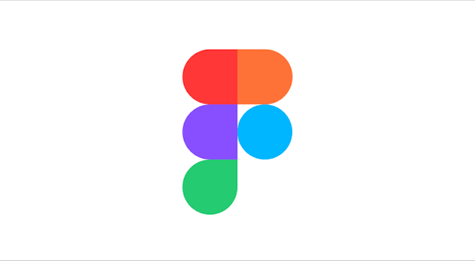
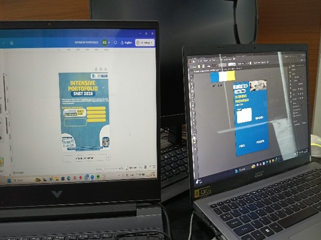
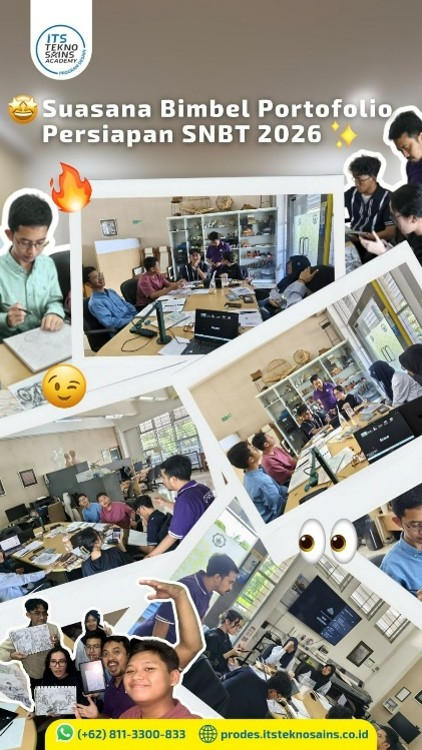
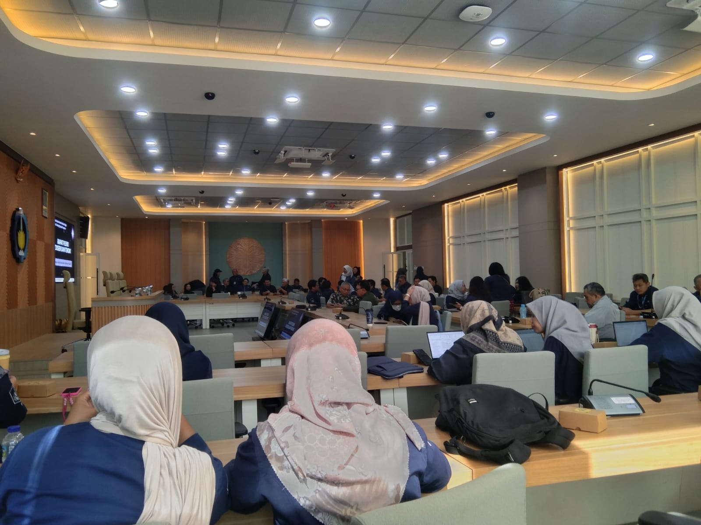

OPEN TO WORKID: DKV-2026-SBY
M. Thoriqull Rizqy
SMK Negeri 10 Surabaya
🔄 KLIK UNTUK BALIK
📱 SCAN ME

🔄 KLIK UNTUK KEMBALI
📞 Quick Contact
- 📧 Sukolilo, Kota Surabaya, Jawa Timur 60118
FREELANCE
⭐ SOFT SKILLS
-
▶ Komunikasi
Menyampaikan ide dan masukan secara jelas kepada tim maupun klien.
-
▶ Kerja Tim
Ber kolaborasi terbuka dan saling mendukung dalam proses kreatif.
-
▶ Kreativitas
Menghasilkan ide segar dan solusi visual yang out-of-the-box.
-
▶ Problem Solving
Menganalisis kendala dan mencari solusi cepat saat proses produksi.
-
▶ Manajemen Waktu
Mengatur deadline dan prioritas agar target tetap tercapai tepat waktu.
-
▶ Adaptabilitas
Cepat menyesuaikan diri dengan revisi, tools, dan kebutuhan baru.
-
▶ Teliti
Perhatian pada detail kecil demi hasil akhir yang rapi dan presisi.
-
▶ Etos Kerja
Disiplin, bertanggung jawab, dan konsisten menyelesaikan setiap tugas.
💡 Selalu terbuka untuk masukan & kolaborasi baru.
MUHAMMAD THORIQULL RIZQY
Saya memiliki minat dan ketertarikan pada bidang Desain Komunikasi Visual, khususnya dalam perancangan desain grafis dan visual tiga dimensi (3D). Saya terbiasa mengolah ide menjadi karya visual yang komunikatif, estetis, dan memiliki pesan yang jelas, baik secara mandiri maupun dalam tim.
🎓 PENDIDIKAN
SMK Negeri 10 Surabaya
Jurusan Desain Komunikasi Visual (DKV)
Mendalami desain grafis, UI/UX, animasi 2D/3D, dan produksi konten kreatif. Aktif mengikuti proyek sekolah, PKL, serta kompetisi desain untuk mengasah kemampuan praktis.
SMP Negeri 30 Surabaya
Sekolah Menengah Pertama
Menyelesaikan pendidikan menengah pertama sambil mengembangkan minat di bidang seni rupa dan desain melalui kegiatan ekstrakurikuler serta tugas kreatif.
SD Klakahrejo
Sekolah Dasar
Menyelesaikan pendidikan dasar di SD Klakahrejo, Surabaya, dengan bekal literasi, kreativitas, dan kerja sama yang menjadi fondasi perjalanan belajar selanjutnya.
📚 FOKUS BELAJAR
Terus mengembangkan kemampuan di bidang Desain Komunikasi Visual, motion graphic, dan pemodelan 3D melalui proyek mandiri maupun pengalaman PKL.
🔧 KEMAMPUAN & TOOLS

Blender
Canva
CapCut
Figma- Desain Grafis & Adobe Illustrator: Merancang materi visual yang komunikatif, estetis, dan tata letak dokumen/aplikasi.
- Desain 3D (Blender): Permodelan karakter, furnitur, aset properti kuliner, serta pengaturan proporsi & pencahayaan.
- Seni Lukis & Sketsa: Nirmana titik, teknik arsir (hatching, cross-hatching, stippling), stilasi ornamen, dan still life.
- Editing Video & Motion Graphic: Adobe After Effects, Adobe Premiere Pro, dan CapCut untuk motion, transisi, color grading, serta penyuntingan konten video.
- Desain Template & Kolaborasi Tim: Canva dan Figma untuk desain cepat, komponen UI, prototipe, serta kerja kolaboratif dengan tim kreatif.
🏆 PENGALAMAN & PENCAPAIAN
Rekam JejakKompetisi Kelas Modul
Meraih peringkat 10 besar dalam perancangan desain modul & antarmuka kuliner.
Desain Logo Perusahaan
Merancang identitas visual & logo perusahaan swasta yang profesional dan mudah dikenali.
Seleksi Lomba 3D Character
Mengikuti seleksi lomba perancangan karakter 3D (3D Character) menggunakan Blender.
🏭 FIELD WORK PRACTICE EXPERIENCE
PKLProgram Design ITS Tekno Sains Academy
Februari 2026 - April 2026
- • Desain Grafis dan Branding. Membuat aset visual untuk kebutuhan promosi, materi edukasi, serta identitas visual acara atau media sosial.
- • 3D Modelling dan Animasi. Mempelajari serta mempraktikkan pembuatan aset tiga dimensi, rendering, dan animasi dasar sesuai dengan kurikulum peminatan di PRODES.
- • Pemasaran Digital (Digital Marketing). Merancang strategi konten media sosial, pengelolaan kampanye digital, hingga penulisan copywriting untuk menjangkau calon peserta pelatihan.

DOKUMENTASI PKL 01

DOKUMENTASI PKL 02
Faculty Design Creativity & Business Digital
Juli 2026 - Oktober 2026
- • Produksi Konten Digital. Membuat desain grafis, infografis, video pendek (reels), dan materi promosi untuk media sosial maupun situs web resmi FDKBD ITS.
- • Peliputan dan Penulisan Berita. Mendokumentasikan kegiatan fakultas atau universitas, lalu menyusunnya menjadi rilis pers (press release) atau artikel berita untuk kanal seperti ITS News.
- • Pengelolaan Identitas Visual. Mempelajari penerapan panduan identitas visual resmi kampus pada berbagai kebutuhan acara dan publikasi.

DOKUMENTASI PKL 03
SLOT PKL 3
Tambahkan pengalaman PKL lainnya di sini
MY PROJECTS
Klik pada kartu karya untuk melihat detail proses & pratinjau penuh.